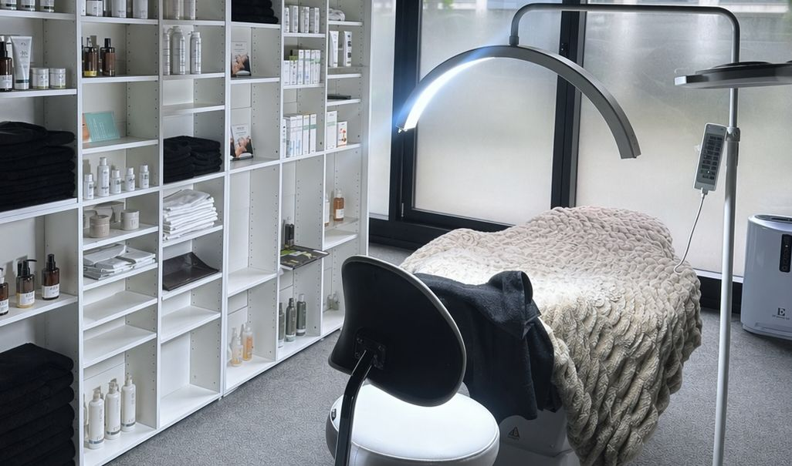
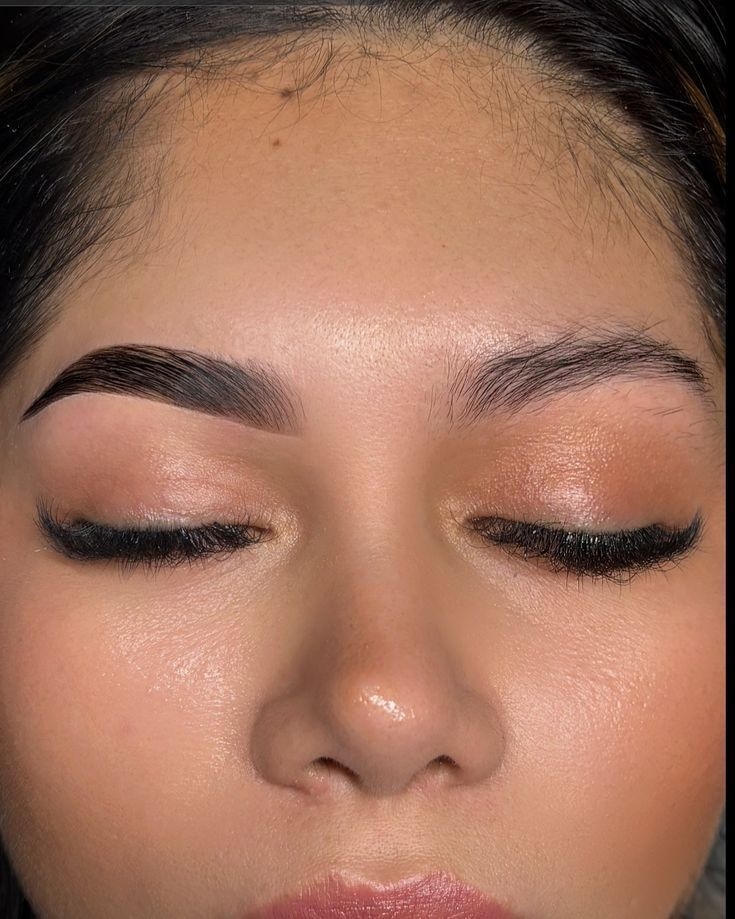
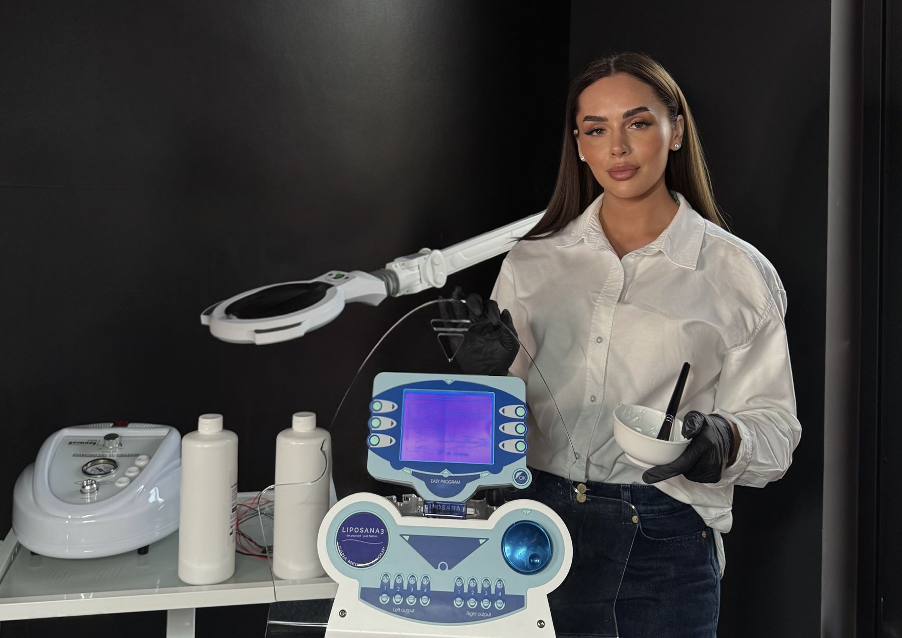
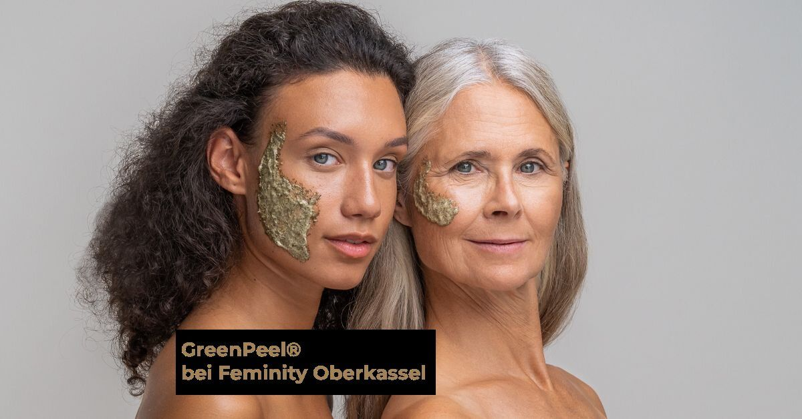
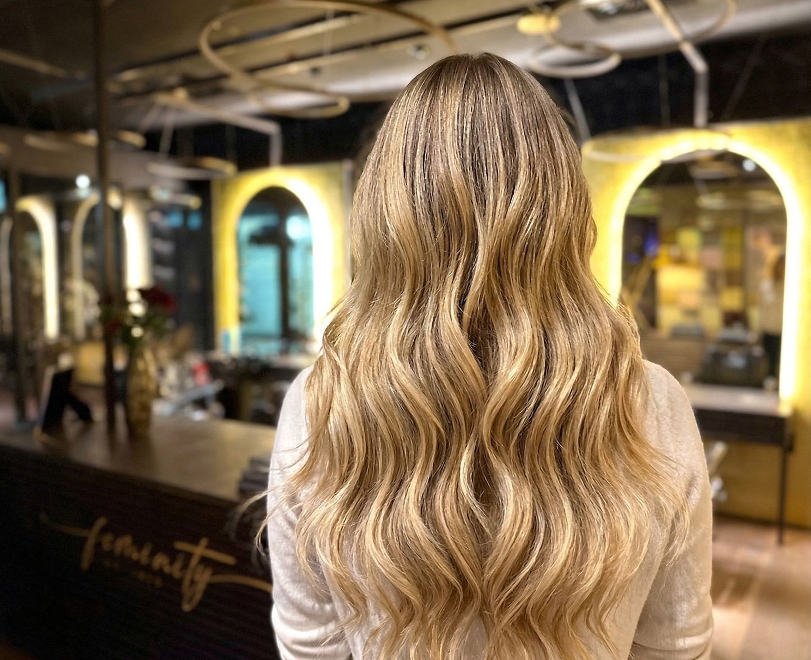
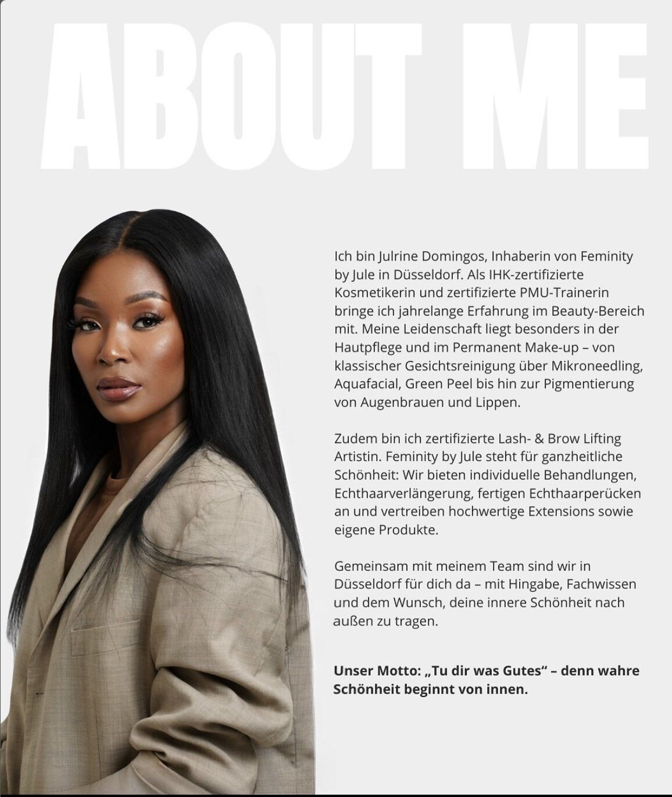
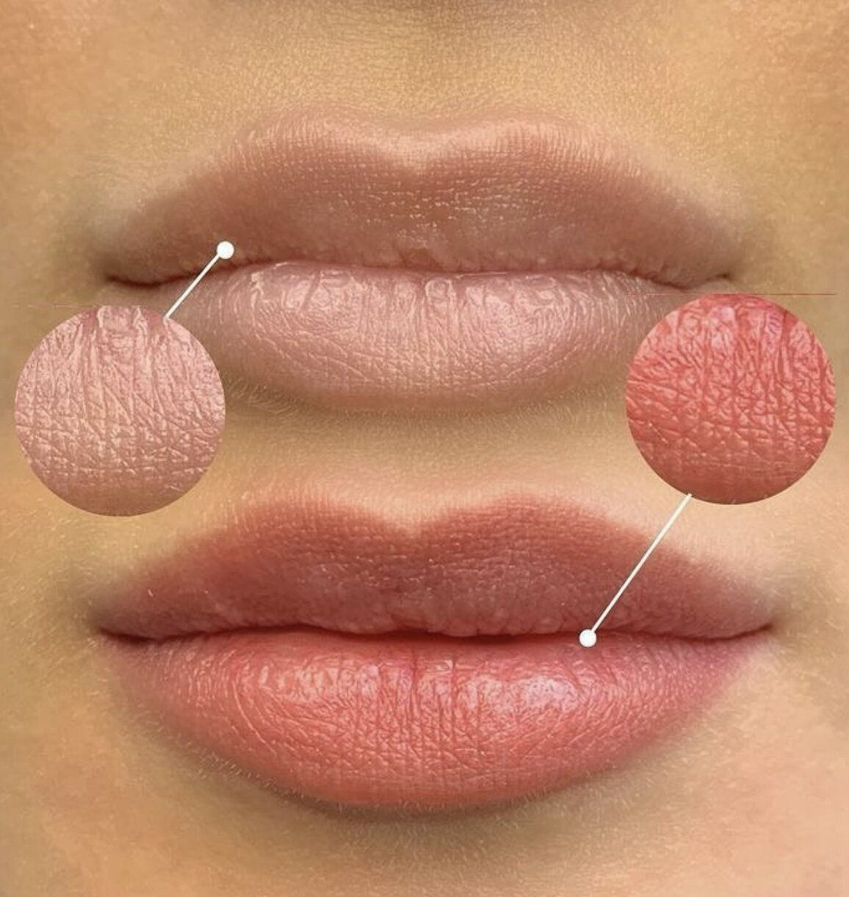

Tipps & Trends, Behandlungen erklärt, Team-Stories und News direkt aus unserem Beauty Space in Düsseldorf-Oberkassel.

Frei von Parabenen, Phenoxyethanol und MIT/MCI – und trotzdem hochwirksam. Warum Neovita Cosmetics gerade für Kontaktallergiker, atopische Haut und Couperose ein Gewinn ist, und wie wir die Linie bei Feminity einsetzen.
WeiterlesenDer Geometric Bob ist kein gewöhnlicher Haarschnitt – er ist Präzisionsarbeit. Nicky erklärt ihre Schnitttechnik, warum Geometrie im Haar so revolutionär wirkt und für wen der Look gemacht ist.
Weiterlesen
Was steckt hinter dem Browlifting-Trend? Wir erklären, wie Brow Lamination funktioniert, wie lange das Ergebnis hält und für wen die Behandlung geeignet ist.
Weiterlesen
Körperformung ohne Skalpell, ohne Auszeit. LIPOSANA3 kombiniert Mikrostrom, Infrarot und Vibrations-Frequenz für sichtbare Ergebnisse – wir erklären, wie es funktioniert.
WeiterlesenZwei Tage, sehr limitierte Termine: PMU-Künstlerin Vivien Mader gastiert am 17. & 18. April exklusiv bei Feminity by Jule. Jetzt Platz sichern!
WeiterlesenWir erweitern unser Angebot um den NAD+ Drip. Was steckt hinter dieser exklusiven Infusion – und warum ist NAD+ der neue Beauty- und Anti-Aging-Trend?
Weiterlesen
Was steckt hinter der legendären Green Peel® Behandlung? Wir erklären, wie die intensive Kräuterkur wirkt, für wen sie geeignet ist und was du danach erwartest.
Weiterlesen
Balayage ist mehr als ein Trend – es ist eine Technik. Nicky Rouge erklärt, warum freihändig aufgetragene Farbe so viel natürlicher wirkt und was dich bei uns erwartet.
Weiterlesen
Wie wird man Master Beautician, PMU-Expertin und Inhaberin eines eigenen Beauty Spaces? Jule erzählt ihren Weg – ehrlich, persönlich und voller Inspiration.
Weiterlesen
PMU ist nicht gleich PMU. Wir räumen mit den häufigsten Mythen auf und erklären, warum zertifizierte Expertise bei dieser Behandlung entscheidend ist.
WeiterlesenNicky Rouge ist Spezialistin für Locken und natürliche Haarstrukturen. Im Interview verrät sie ihre Philosophie und warum Curl Couture so viel mehr ist als ein Schnitt.
Weiterlesen